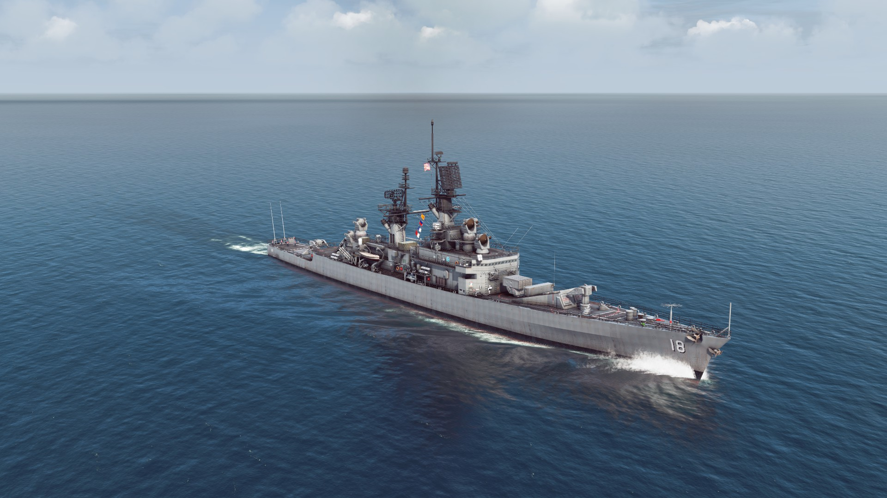

A table of some of the more well-known large surface ships in the game and some of their characteristics.
| Class Name* | Affiliation | Ship Type** | Displacement (tons)*** | Link | In-game Image | Notes |
|---|---|---|---|---|---|---|
| Nimitz | US | Aircraft Carrier | 100,000 | Wikipedia | 10-ship class of nuclear carrier. First warships to displace 100,000 tons or more. All are currently in service, although the lead ship (USS Nimitz) is due to be decommissioned by 2026. | |
| Enterprise | 94,000 | Wikipedia | First nuclear-powered aircraft carrier, only ship of its class. Had eight nuclear reactors and an experimental radar system, which gave the island its boxy shape. The starship Enterprise from Star Trek is named after this ship. Second US carrier named Enterprise, after a WWII carrier. | |||
| Kitty Hawk | 83,000 | Wikipedia |  |
Second class of US supercarrier, which improved the layout of the flight deck compared to the Forrestal class, which made aircraft handling easier. One ship, USS John F. Kennedy, was built to a modified design and is considered a subclass. | ||
| Forrestal | 82,000 | Wikipedia |  |
First class of supercarrier built. Could carry about 80-90 aircraft. The first two were built as straight-decked carriers and converted to angled-deck later, while the last two were built from the start with angled decks. Didn't have the most efficient deck and elevator layout, which would be corrected in subsequent designs. | ||
| Orel | USSR | 80,000 | Wikipedia | Was designed in the 1970's but never built. Designed with anti-ship missiles unlike US supercarriers but similar to other Soviet carriers, and was designed to carry about 60 aircraft. | ||
| Kiev | 42,000 | Wikipedia | Called a "Heavy Aviation Cruiser" by the Soviets. Had anti-ship missiles in the front of the ship with a flight deck in the rear for VTOL aircraft and helicopters. | |||
| Moskva | Helicopter Carrier | 15,300 | Wikipedia |  |
Carried around 12-16 helicopters and a simple SAM system. Optimized for hunting US submarines. Were seen as top-heavy and so never served in the Northern Fleet, instead serving in the Black Sea. | |
| Haruna | Japan | 6,900 | Wikipedia | Called a helicopter destroyer but more appropriately a helicopter carrier. Had a flight deck and hangar that took up most of the rear of the ship, with 5" guns and a US ASROC launcher up front. Later modified with more capable weapon systems, including anti-air systems. | ||
| Iowa | US | Battleship | 58,400 | Wikipedia |  |
Likely the most recognizable class of battleships in the world. Four were built during WWII, all of them seeing action, with USS Missouri being the location for the surrender ceremony that ended the war. All four were reactivated during the 1980s, with new radar and electronic systems as well as weapons systems like the Harpoon and Tomahawk cruise missiles and the Phalanx CIWS. All 4 are now museum ships. |
| Sverdlov | USSR | Cruiser | 16,600 | Wikipedia |  |
Class of conventional (Aka WWII-era) cruisers built just after WWII. Were intended to project power outside the immediate area of the Soviet Union as part of Stalin's postwar goals, but production was cut back after his death and with the dawn of the missile age. Many were still converted to have more modern CIWS systems and a few were used as experimental test beds for the first Soviet naval anti-ship and SAM systems, but those never went anywhere. |
| Kirov | Guided Missile Cruiser | 28,000 | Wikipedia |  |
Large Guided Missile Cruiser, sometimes called a battlecruiser. Had a heavy anti-ship missile armament and several SAM (surface-to-air missile) systems, including the S-300 area-defense system. Had a partial nuclear and conventional propulsion. Two remain in commission, with one the flagship of the Russian Fleet. | |
| Slava | 11,500 | Wikipedia | Had 16 anti-ship missiles in 8 twin launchers arrayed on either side of the superstructure, along with the S-300 system. The lead ship, Slava (renamed to Moskva later in life) was sunk by anti-ship missiles during the Ukraine war. | |||
| Kynda | 5,500 | Wikipedia | First purpose-built Soviet missile crusiers. Carried the SS-N-3 missile in two trainable quad launchers, with a single reload per tube. Were top-heavy and consequently never served in the Soviet Northern Fleet, as accumulated ice would have made them unstable. | |||
| Kara | 9,700 | Wikipedia | Designed as an anti-submarine cruiser with the SS-N-14, or Metel, rocket-propelled torpedo, and multiple anti-air and anti-submarine systems. | |||
| Kresta II | 7,500 | Wikipedia |  |
Similar design to the Kresta I, but switched to anti-submarine warfare instead of anti-ship due to a change in Soviet naval priorities. Has similar but somewhat lesser capabilities as the Kara, which succeeded them. | ||
| Kresta I | 7,500 | Wikipedia |  |
Follow-on to Kyndas, with 4 anti-ship missiles. Designed as an anti-ship cruiser, production was cut short once the Soviet Navy switched to anti-submarine ships like the Kara and Kresta II. | ||
| Ticonderoga | US | 9,800 | Wikipedia | Built on the same hull as the Spruance and Kidd class destroyers, but had a much bigger superstructure. Was one of the first US ships to carry the Aegis Combat System, which allows ships to network and share combat information and command fire weapons from other platforms. The first four were built with twin-armed missile launchers, while the rest were built with VLS. A few are still in service, but are being decommissioned slowly. | ||
| Long Beach | 15,500 | Wikipedia |  |
Shared a lot of characteristics with the USS Enterprise: first nuclear-powered ship of it's type, had the experimental radar system that Enterprise had, and the only member of it's class. The ship underwent a refit in the middle of its career that switched most of the weapons suite. | ||
| Virginia | 11,800 | Wikipedia | Nuclear-powered class of cruisers, received sensor and weapons upgrades later in life, decommissioned before being refueled after the fall of the Soviet Union. | |||
| Belknap | 7,900 | Wikipedia | Used the SM-2ER SAM (surface-to-air) missile, which had an effective range of approx. 80 nm. Had a single nuclear-powered variant, USS Truxtun. | |||
| Leahy | 7,800 | Wikipedia |  | Similar to the Belknap class, but had missile launchers at either end, instead of the aft helicopter hangar and landing pad that the Belknaps had. Also had a nuclear-powered variant, USS Bainbridge. | ||
| California | 10,800 | Wikipedia | Class of two nuclear-powered cruisers. Used single-arm missile launchers instead of the more common twin-arm launchers for US missile cruisers. | |||
| Sovremenny | USSR | Guided Missile Destroyer | 8,000 | Wikipedia | Guided Missile Destroyer primarily armed with anti-ship missiles and a more modern SAM system. Complements the Udaloy-class destroyers, which are optimized for anti-submarine warfare. A handful remain in service, including four with the Chinese Navy. | |
| Udaloy | 7,500 | Wikipedia | Guided Missile destroyer, built as a complement to the Sovremennys while being oriented towards ASW. Armed with the SS-N-14 missile system that the Kara, Krivak, and Kresta II's carry, along with a naval version of the Tor short-range SAM system in a VLS (vertical launch system). Carries two ASW helicopters in a rear hangar. | |||
| Kashin | 4,400 | Wikipedia | Soviet destroyers built in the 60s for anti-submarine warfare. Advanced for their time but were less capable by the early 80s. A few ships were modified with anti-ship missiles and close-in weapons systems (CIWS). | |||
| Kanin | 4,500 | Wikipedia | Developed initially with anti-ship missiles in the late 50s, they were converted into ASW after that proved unsatisfactory. | |||
| Kidd | US | 9,800 | Wikipedia | Built to a similar design as the Spruance-class destroyers, but was optimized for anti-air warfare instead of anti-submarine. Initially built for Iran by the US but the deterioration between the two countries after the Iranian Revolution led to the US Navy acquiring them instead. The four ships were all named after US Navy admirals who were killed during WWII. | ||
| Adams | 4,500 | Wikipedia |  |
First purpose-built guided missile destroyer built by the US. Was upgraded later in their service but was decommissioned in the 80's once the Arleigh Burke class destroyers, the US Navy's current destroyer class, entered service. The Australian and West German navies operated these, one of which is a museum ship in Germany. | ||
| Coontz | 5,600 | Wikipedia | First class of US guided missile destroyers. First three were armed with naval guns, but were later retrofitted with missile launchers. The remaining seven were built as missile destroyers from the start. | |||
| Tachikaze | Japan | 4,000 | Wikipedia | One of the first Japanese Cold War-era destroyers to feature a missile-based air defense system, having the same Mk 13 missile launcher as the US Perry class and others. Otherwise they followed Japanese design practices by being oriented towards ASW. | ||
| Minegumo | Destroyer | 2,800 | Wikipedia | Built concurrently with the Yamagumo class, with a similar loadout that heavily focused on ASW and therefore had few to no weapons for other roles. Carried the DASH helicopter drone, but that proved unsatisfactory in both the US and Japanese Navies. | ||
| Yamagumo | 2,100-2,200 | Wikipedia | Similar to the Minegumo class, but lacked a helipad and hangar for the DASH drone, but had the ASROC Anti-submarine missile launcher, which the Minegumos lacked. Construction of the type was restarted after abandoning the attempt to use the drones on the Minegumos. | |||
| Takatsuki | 4,600 | Wikipedia | Similar to the Minegumo and Yamagumo classes, but had an increased gun caliber for the main guns. Also had the DASH drones, which were removed later. Were upgraded with short-range air defense systems, although this is not reflected in-game. | |||
| Spruance | US | 8,700 | Wikipedia | Classified as destroyers instead of guided missile destroyers due to a lack of area-defense SAM system, instead having missile systems more appropriate for self-defense. Optimized for ASW, they had two helicopters. Similarly to the Adams class, they were taken out of service once the Arleigh Burke class began commissioning. | ||
| Luda I | China | 3,670 | Wikipedia |  |
The first guided missile destroyers built by the PLAN, called the Type 051 destroyer, and based on Soviet destroyers. The Luda I included the Type 051, 051D, and 051Z and were armed with 130 mm and 37 mm guns, although a few also had 57 mm anti-aircraft guns. They also carried the HY-1 missiles in two triple launchers, which were derived from the Soviet SS-N-2 missile. They were continually upgraded with better sensor and electronic equipment. | |
| Perry | US | Guided Missile Frigate | 4,200 | Wikipedia | Built as ocean escorts for anything from merchant convoys to carrier strike groups. Had two different variants, which determined what helicopters the ships could carry. 71 were built, including 51 for the US Navy and the rest for several different navies around the world. Many of the US ships were sold to other navies after being decommissioned. | |
| Krivak | USSR | 3,300 | Wikipedia | Had the same SS-N-14 system that the Udaloy, Kresta II, and Kara classes carried, but in a "hot dog" 1x4 launcher. 32 were built in several different variants, including one variant for the KGB Border Guard. One of the class, the Storozhevoy, was involved in a mutiny in 1975 which inspired the novel "The Hunt For Red October." |
*The Soviets referred to ships made from a single design by project number and not a class name. For example the Kirovs were the Project 1144 cruisers, Slavas 1164, Sovremenny 956, etc. Here I am using the name that NATO gave to the Soviet classes.
**The classifications made here are according to how the game classifies them.
***Displacement values are approximated to the nearest 100. Figures are using full load displacement where that differs from standard displacement.